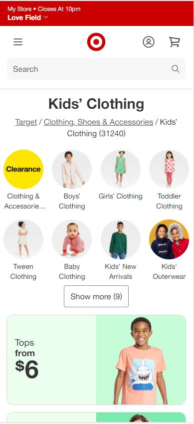
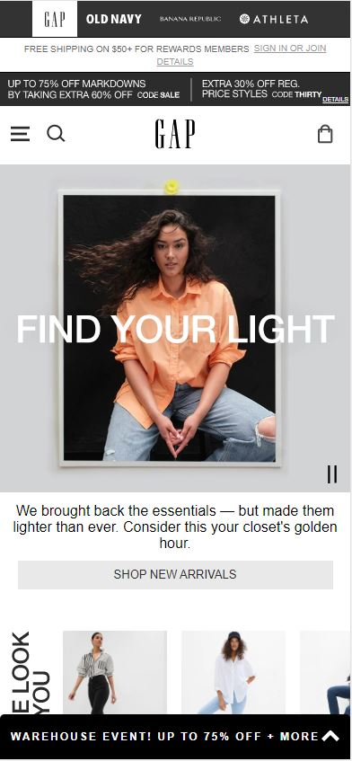
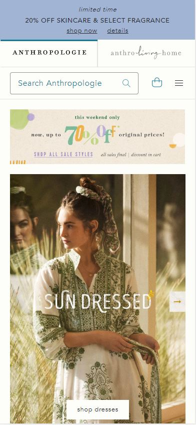

Proximity
Target
This Target ad displays the Proximity design element. Proximity allows the audience to view the ad in an organized way guiding the viewer to what is most important first, followed by the next important element and so forth. In the ad in particular we can tell the designer wants us to see view the available categories first followed by the sale items.
Contrast
Gap
This Gap ad is a great representation of the contrast design element. Contrast is seen though the colors black and white offsetting eachother. This principle works to establish design hierarchy which allows the audience to know where to look for key elements on the site.
Repetition
Anthropologie
The designer of this Anthropologie website used the repetition desing element. We can see the repetition of the rectangular shape in the purple banner, the search box, the sale banner, and then the image of the woman wearing a dress. Using the repetition design element helps to bring unity to the website.